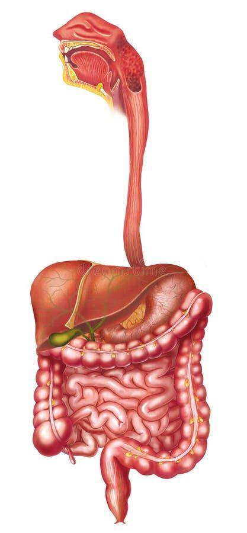
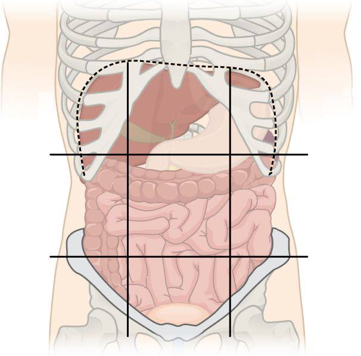
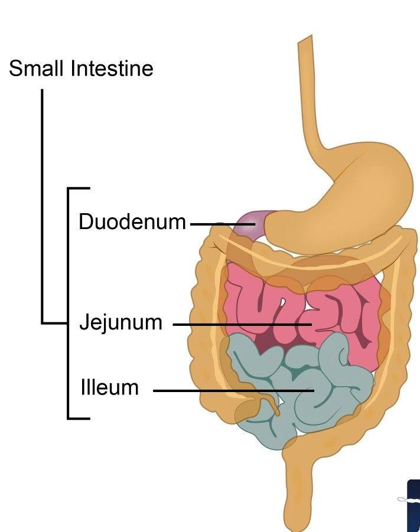

Verdauung des Menschen — von Mund bis Darm
Die Verdauung beginnt im Mund (Kauen, Speichelamylase), geht weiter in Magen (Säure, Pepsin) und Dünndarm (Enzyme, Aufnahme). Im Dickdarm wird Wasser resorbiert und die Darmflora fermentiert Ballaststoffe.
Mund & Speiseröhre
Kauen zerkleinert Nahrung mechanisch; Speichel beginnt Kohlenhydratverdauung.
Magen
Magensäure und Enzyme spalten Proteine; der Magen portioniert die Nahrung in den Dünndarm.
Dünndarm
Hier erfolgen Enzymwirkung und Nährstoffaufnahme (Zotten vergrößern Oberfläche).
Dickdarm & Darmflora
Dickdarm resorbiert Wasser; Mikroorganismen unterstützen Verdauung und Immunsystem.